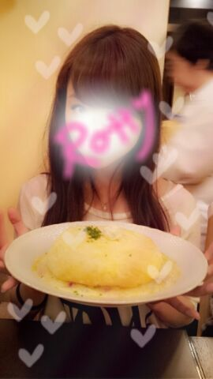
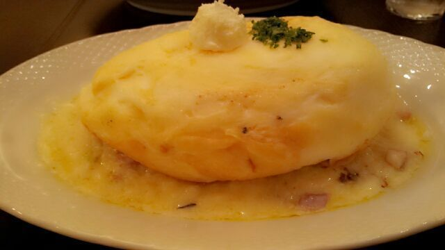

Hi ♪/
ろってぃ−だお.
この前 せっちゃんと会って
夜ご飯に行った時ね
あれ？まだかなぁ〜
もう30分位待ってるよねえ(´・ω・)?
ってゆ−てたら
そのお店の可愛いおばあちゃん♪が
よいしょよいしょ...
ようやく
注文した「ふんわり卵」を
持ってきてくれたのね,
驚きだよお(〃∨〃)?
ほらっ♪

すごくない？キャッ(〃ω〃)
アメフトのボールみたいだ.

これね
オムライスみたいなのかなん?
って思ったら 中身が
ぜぇ〜〜んぶ 卵なのっ(/*´∨`*)/
ふんわふんわで
モフモフよっ(*´ω`*)
こんなの初めて食べるから
感動した !
下にドリアみたいなご飯が
あったよ /
オリーブオイルいっぱいだったよ♪
オリーブオイルって
体にもお肌にもいいんだよねぇ〜〜
(*^^*)
ボリューミィ〜んだったお。
ぴょん !
これから
プリンシパルに向けてのお稽古が
始まってきます！
ミュージカル経験は
まひろにはない...
でも できるできない関係ない !
一生懸命する!
急にネガティブになって
blogで弱音っぽいことを書いて
皆さんに心配かけちゃう時とかも
あるかもしれいけど
私は絶対逃げません !
よろしくお願いします(・∨・)!
ほいなら 早寝しましょかぁ〜♪
おやすみなさい...(〃ω〃)